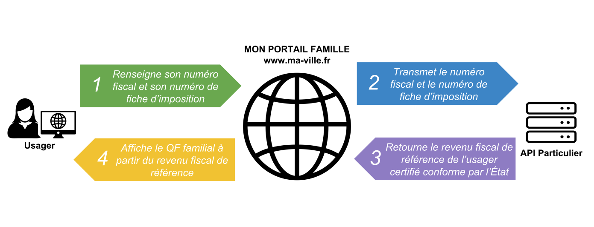

API Particulier permet de récupérer des informations certifiées à la source dans un point d'accès unique : l'API (voir aussi Qu'est ce qu'une API ?).

L'accès aux données est réalisé au travers de protocoles de communications sécurisés et seuls les opérateurs agréés peuvent se connecter à l'API.
API Particulier et FranceConnect sont deux systèmes indépendants mais complémentaires.
| FranceConnect | API Particulier | |
|---|---|---|
| Nature | Fournisseur d’Identité et tiers de confiance | Fournisseur de Données |
| Identification | Citoyen et Fournisseur de Service | Fournisseur de Service |
| Type de donnée | liée à la personne | liée à la personne, au foyer familial, aux parents et aux enfants |
API Particulier et FranceConnect peuvent être utilisés seul ou conjointement.